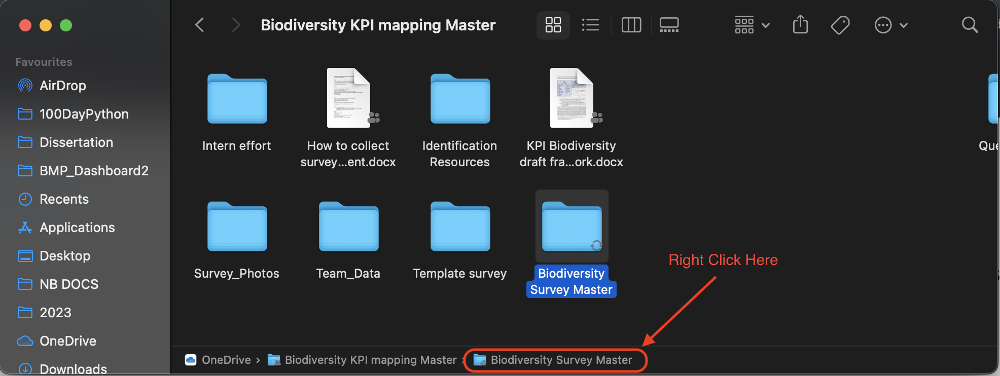

3 The Data
3.1 Setting up OneDrive
The following instructions are for Mac users. If you are using windows, you should have OneDrive already installed on your computer.
- Download OneDrive:
- Go to the Mac App Store on your laptop.
- Search for “OneDrive.”
- Click on “Get” or “Install” to download the OneDrive app.
- Install OneDrive:
- Once downloaded, open your Applications folder and locate the OneDrive app.
- Drag the OneDrive app to your Dock for easier access (optional).
- Sign In:
- Open the OneDrive app.
- Sign in with your university account.
- Follow the on-screen prompts to set up OneDrive.
- Choose Folders to Sync:
- Once signed in, you’ll have the option to choose which folders from your OneDrive cloud storage you want to sync with your Mac.
- Select the folders you want or choose to sync everything.
- Set OneDrive Preferences:
- Click on the OneDrive icon in the Mac menu bar at the top of your screen.
- Click on the three dots (More) and select “Preferences.”
- Here, you can adjust settings like:
- Starting OneDrive automatically when you sign in to your Mac.
- Choosing how files are downloaded or uploaded (e.g., over metered networks).
- Setting up file on-demand (allows you to see all your files without having them downloaded).
- Accessing Your Files:
- A OneDrive folder will now be present in your Mac’s Finder. This folder will sync with your online OneDrive storage. Any files or folders you add to this folder will be automatically uploaded to the cloud, and any changes you make to files in this folder will be reflected in the cloud version. Read that again! It important that you know that if you change or delete any files in the OneDrive folder on your laptop it will affect the database online.
- To Unlink or Sign Out:
- If you ever wish to unlink your account or sign out, click on the OneDrive icon in the Mac menu bar.
- Click on the three dots (More) and select “Preferences.”
- Go to the “Account” tab and select “Unlink this Mac.”
3.2 Getting the data
First, navigate to the R script called “packages” to check whether you have all the required packages, if you don’t the script will also install and load them for you. Done!
Now, open the script “RemoteDataPull_Prepare”.
The most important first step here is to modify the object “path_to_master” with the filepath to where ever you have the OneDrive folder on your device and specifically to the main survey folder “Biodiversity Survey Master”. If you are using a Mac, navigate to the folder in Finder and then in the bottom panel (see below), right click the folder name and select “Copy”folder name” as Pathname”.

Let’s break down the code:
- Setting the Path to the Master Directory:
path_to_master <- "/Users/anecloete/Library/CloudStorage/OneDrive-UniversityofStAndrews/Biodiversity KPI mapping Master"This line sets a variable called path_to_master to the path of the main directory where the geopackage files are located. Paste the pathname you copied here.
- Obtaining All Geopackage Files:
all_gpkgs <- list.files(
path = paste0(path_to_master,"/Biodiversity Survey Master"),
recursive = TRUE,
pattern = "\\.gpkg$",
full.names = TRUE
)This code lists all files with the “.gpkg” extension in the specified directory and its subdirectories.
- The path argument specifies where to look.
- recursive set to TRUE means it will look in subdirectories as well.
- pattern filters for files ending with “.gpkg”.
- full.names set to TRUE ensures the full path of each file is returned, not just its name.
- Filtering Geopackages with ‘Habitat_Polygon’ in Their Name:
This filters the all_gpkgs vector for filenames that contain the substring “Habitat_Polygon” and assigns the subset to survey_polygons.
- Excluding Geopackages Based on Certain Keywords:
Here, a pattern is defined to exclude geopackages with certain keywords in their names. The grepl function checks for matches, and the ! operator negates the condition to exclude matches.
- Exclude a Specific Problematic Geopackage:
problematic_gpkg <- paste0(path_to_master,"/Erica/Erica Backup/Ericabutterflies.gpkg")
all_gpkgs <- all_gpkgs[all_gpkgs != problematic_gpkg]This code defines a specific geopackage file path that is “problematic” and then removes this file from the all_gpkgs vector.
- Reading All Geopackages into a List:
The lapply function is used here to apply the st_read function to each file path in the all_gpkgs vector. The result is a list, with each element being the content of a geopackage file stored as an spatial features dataframe. The st_read function is part of the sf package in R and is used to read spatial data.
In summary, this code: - Sets a path to a master directory. - Lists all geopackage files from this directory and its subdirectories. - Filters and excludes certain geopackages based on keywords or specific filenames. - Reads the content of each remaining geopackage file into a list.
3.3 Data cleaning and preparation
Most of this is self explanatory or is a bit tedious to explain. I would recommended investigating and exploring the data before the cleaning and preparation so that some of the lines make more sense. But here are a few notable things:
- Each student have a backup folder embedded in their folder, these geopackages are removed in line 72
- There is separate geopackage for tree data collected, this is included in the dashboard so is cleaned separately and then joined to the rest.
- The Species column contains the name of the species recorded, whether this is the scientific name, the common name or anything else. So all the naming columns are coalesced into one column called Species.
- Line 135 was necessary because for some reason empty entries in the relevant columns were “” and not NA
Some of the code could be a little less sausage making-ish and could be simplified (somethings were added after the fact etc), feel free to make it more efficient!
SUMMARY:
- Coordinate Transformation:
- Transforms the coordinate reference system of spatial data to standard latitude and longitude (EPSG:4326).
# Transform coordinate reference system from WGS 84 / Pseudo-Mercator to standard lat long (EPSG:4326)
taxa_dat <- lapply(myfiles, function(x) st_transform(x, 4326))- Data Conversions:
- Converts the spatial data frames to regular data frames.
- Names each data frame in the list based on the geopackage filename.
- Removes duplicate data frames based on their names.
# Convert spatial data frames to regular data frames
taxa_dat <- lapply(taxa_dat, as.data.frame)
# Name each data frame in the list based on the geopackage filename
names(taxa_dat) <- basename(all_gpkgs)
# Remove any duplicate data frames by name
taxa_dat <- taxa_dat[!duplicated(names(taxa_dat))]- Tree Entries Package Preparation:
- Modifies columns for a specific geopackage (‘Tree Species Entries.gpkg’) to ensure compatibility with subsequent operations.
- Cleans and modifies species names.
- Sets certain columns to specific values or
NA. - Filters and selects specific columns.
# Modify certain columns for 'Tree Species Entries.gpkg' so that bind_rows works
taxa_dat$`Tree Species Entries.gpkg` <- taxa_dat$`Tree Species Entries.gpkg` %>%
rename(Species = 1, Date = 2) %>%
mutate(
Species = case_when(
Species %in% c("unknown/other", "Unknown/other") ~ comments.unlisted.species,
Species == "Unknown young pine " ~ "Unknown young pine",
Species == "Willow x10" ~ "Willow",
TRUE ~ Species
),
taxa = "Vascular Plants",
Observer = NA,
photoid = NA,
Count = NA,
Other = NA,
Speciesful = NA
) %>%
filter(Species != "") %>%
select(Species, Date, taxa, Count)- Date Processing:
- Converts, splits, and extracts components (year, month, day) of the ‘Date’ column.
# Date Processing: Convert, split and extract components of the 'Date' column
taxa_dat <- lapply(taxa_dat, function(df) {
df$Date <- as.character(df$Date)
df <- df %>%
separate(Date, into = c("date", "time"), sep = " (?=[^ ]+$)") %>%
mutate(
date = ymd(gsub("/", "-", date)),
year = year(date),
month = month(date),
day = day(date)
)
return(df)
})- Tree Data Extraction:
- Removes the tree data frame from the list and stores it separately.
# Extract and remove the tree dataframe from the list
tree_data <- taxa_dat$`Tree Species Entries.gpkg`
taxa_dat$`Tree Species Entries.gpkg` <- NULL- Combining Data:
- Merges all data frames in the list into a single data frame.
- Data Cleaning and Transformation:
- Performs several operations to clean and transform the combined data, including:
- Date conversions and modifications.
- Handling missing values.
- Excluding certain records.
- Recoding values in various columns.
- Selecting and renaming columns.
- Performs several operations to clean and transform the combined data, including:
# Clean and transform taxa data for further analysis
taxa_clean <- taxa_comb %>%
drop_na(taxa) %>%
as.character(df$Date) %>%
separate(Date, into = c("date", "time"), sep = " (?=[^ ]+$)") %>%
mutate(
date = ymd(gsub("/", "-", date)),
year = year(date),
month = month(date),
day = day(date)
) %>%
filter(!(taxa == "hoverfly" & Observer == "Erica")) %>% # remove Erica hoverfly entries
unite(collapsed_species, specieslatin:seaweedlatin, sep = ",", na.rm = TRUE) %>%
mutate_at(vars(Species, collapsed_species), na_if, "") %>%
mutate(
Species = coalesce(Species, SpeciesSci, Speciesfull, collapsed_species, species, Other),
photoid = if_else(is.na(photoid), NA, paste0(photoid, ".jpg")),
Count = ifelse(is.na(Count), 1, Count),
taxa = recode(taxa, tree = "Vascular Plants"),
year = recode(year, `2023` = "2022/2023", `2022` = "2022/2023")
) %>%
filter(!str_detect(Species, "(?i)unknown"), taxa != "bee") %>%
filter_at(vars(taxa, Observer), all_vars(!is.na(.))) %>%
mutate(
taxa = recode(taxa,
plant = "Vascular Plants",
bird = "Birds",
macromoth = "Macromoths",
micromoth = "Micromoths",
butterfly = "Butterflies",
dragonfly = "Dragonflies",
hoverfly = "Hoverflies",
bat = "Bats",
amphibian = "Amphibians",
reptileamphibian = "Amphibians",
bumblebee = "Bumblebee",
mammal = "Mammals",
ladybird = "Ladybirds",
tree = "Vascular Plants"),
year = recode(year,
"2023" = "2022/2023",
"2022" = "2022/2023"),
Observer = recode(Observer,
Other1 = "Cori")) %>%
select(Species, SpeciesSci, Count, date, Observer, taxa, photoid, geometry, year, day) %>%
rename(
Date = date,
Taxa = taxa,
PhotoID = photoid
)- Merging Tree Data with Cleaned Data:
- Prepares the tree data to be merged with the cleaned data.
- Merges both datasets.
# tree data prep for bind
tree_data <- tree_data %>%
mutate(
year = ifelse(year == "2023" | year == "2022", "2022/2023", year),
Count = 1 # add column count
) %>%
rename(
Date = date,
Taxa = taxa
)
# Merge tree data with the cleaned data
all_years <- bind_rows(taxa_clean, tree_data)- Geometry Processing:
- Splits the geometry column into separate latitude and longitude columns.
# split into lat and long for mapping
all_years <- all_years %>% mutate(long = unlist(map(geometry,1)),
lat = unlist(map(geometry,2)))- Saving the Resulting Data:
- Saves the final data frame both as an RData object and as a CSV file.
3.4 Pulling photos and documents from OneDrive
3.4.1 Photos
- Reading Team Photos from a Directory:
# read in all photo files within Survey_Photos in OneDrive Folder
all_Tphotos <- list.files(
path = paste0(path_to_master,"/Team_data"),
recursive = TRUE,
pattern = "\\.jpg$",
full.names = FALSE
)This is the same as the first few lines of code, except that the path is constructed by appending “/Team_data” to the path_to_master.
The result is stored in all_Tphotos, which will be a vector of filenames (with “.jpg” extension) from the specified directory and its subdirectories.
- Constructing a Destination Path for Team Photos:
This line constructs a path by combining the current working directory (obtained using getwd()) with “www/Team_Data”.
- Copying the Team Photos:
photo_move <- file.copy(
from = file.path(paste0(path_to_master,"/Team_data"), all_Tphotos),
to = file.path(paste(www_Tfolder_path), all_Tphotos)
)Here, file.copy is used to copy files. The from argument constructs the full paths of the source files, and the to argument constructs the full paths of the destination. The photos are copied from the source directory to the destination.
The same process as above is then done for the Survey Photos.
In summary, the code is designed to:
- Read all “.jpg” files from “Team_data” and “Survey_Photos” directories (including subdirectories).
- Copy those files to two new destinations under the “www” folder in the current working directory.
3.4.2 Documents
The code for downloading and saving the students’ about me descriptions is very similar to the process above. The only addition is that the text of the “student_aboutme” word document is then extracted and saved into an object called “student_text”. Then the text is split into paragraphs.